生成的图表与 Ground Truth 完全不同——错误的主题、错误的数据、或者完全空白。
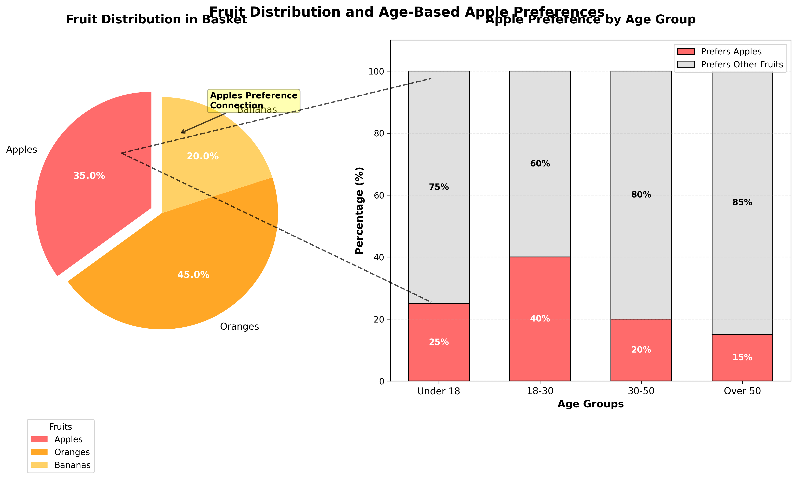
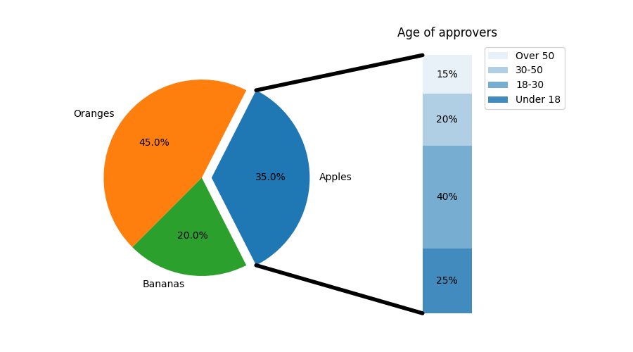
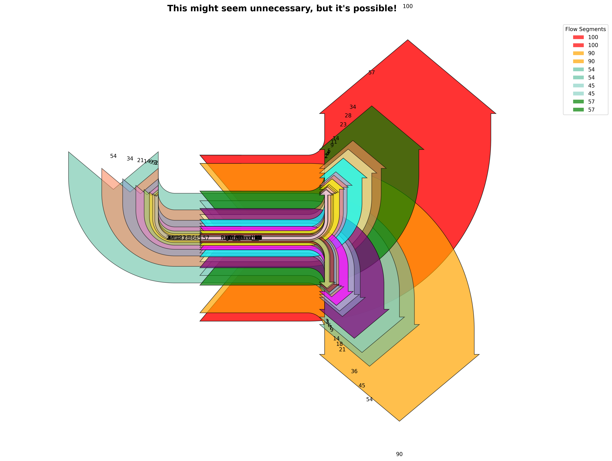
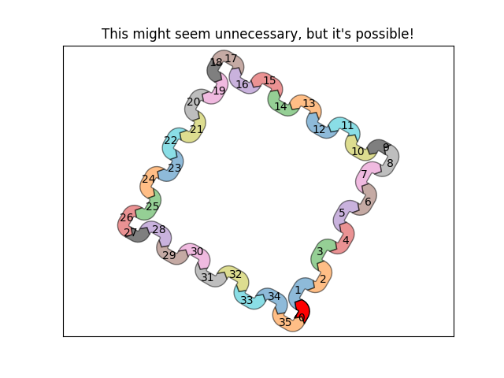
图表有一定结构但数据范围、颜色、布局等严重偏离 Ground Truth。
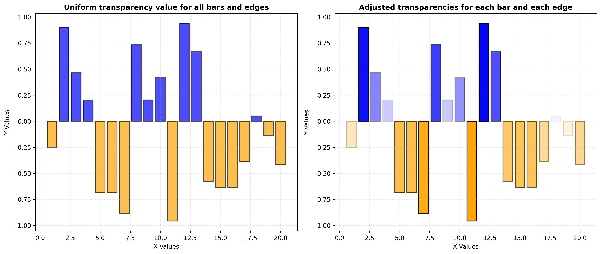
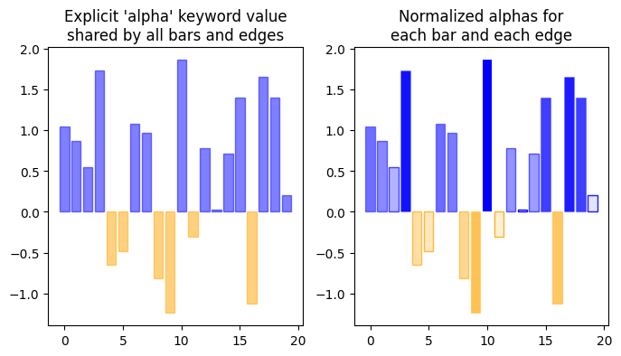
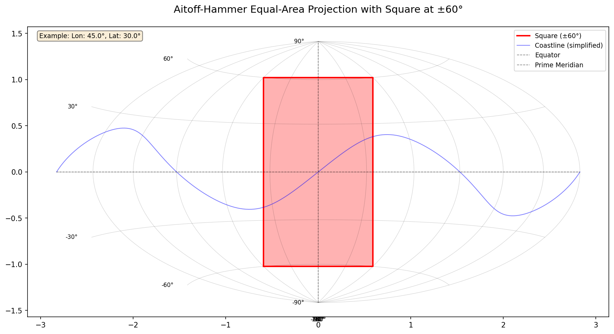
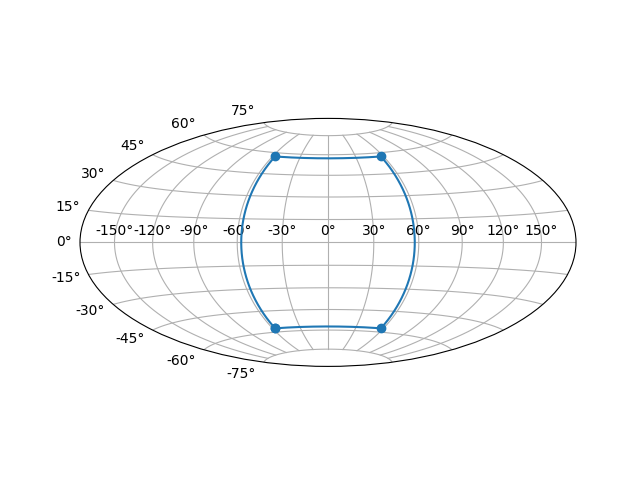
图表结构基本正确，但细节（数据点分布、等高线、子图布局等）有明显差异。
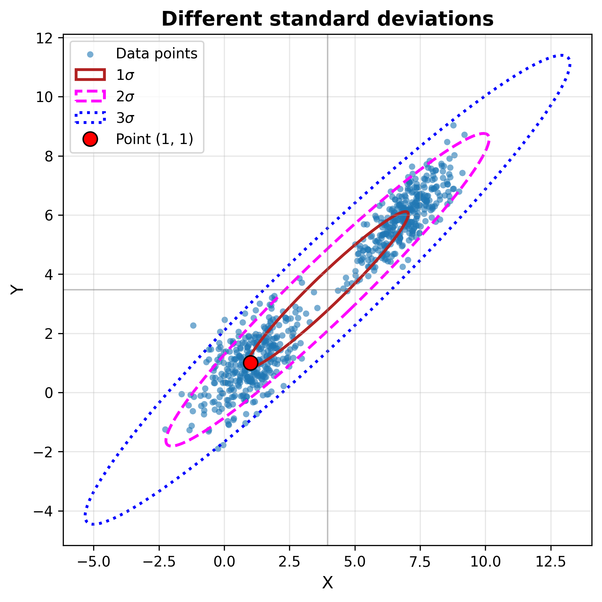
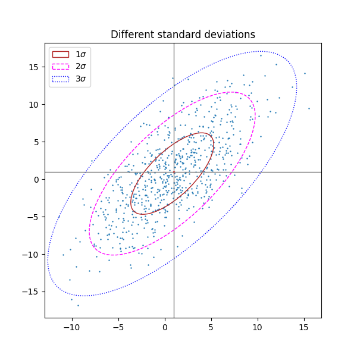
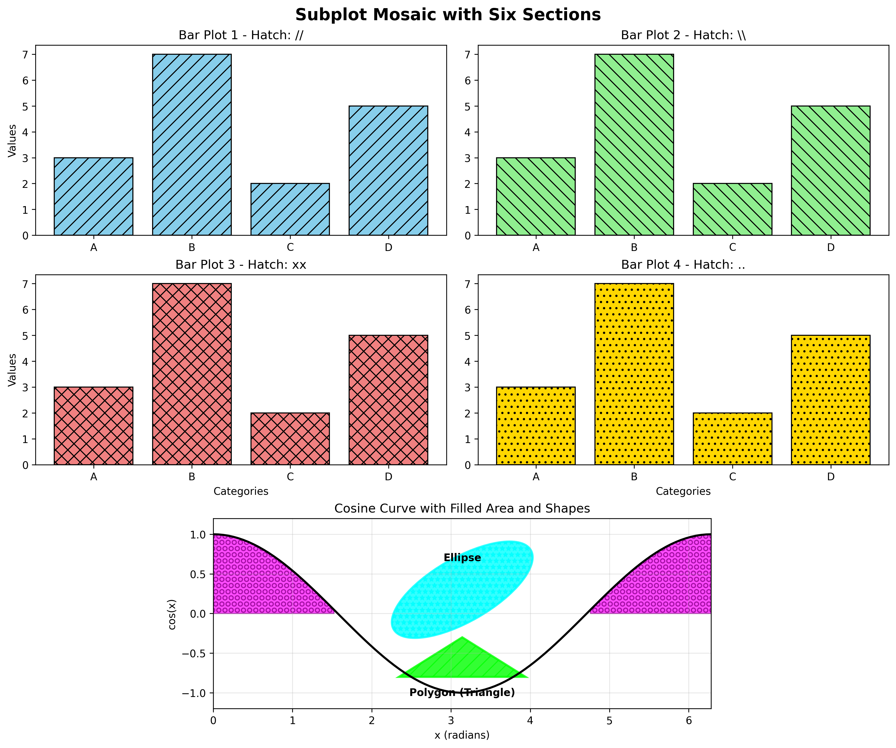
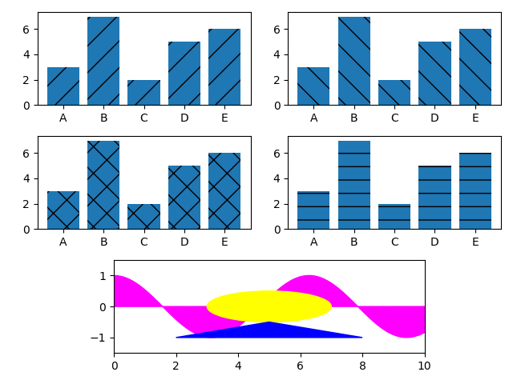
主要结构和数据正确，但存在细节差异（颜色、标签位置、样式等）。
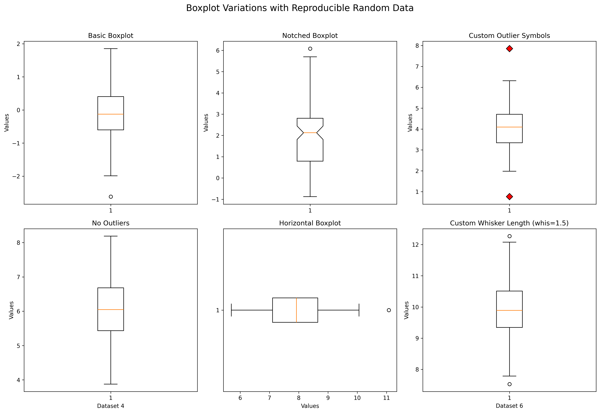
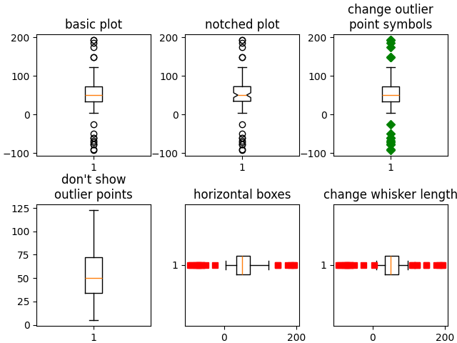
data_point_not_foundlength_mismatchwrong_value